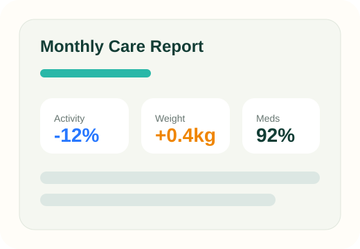
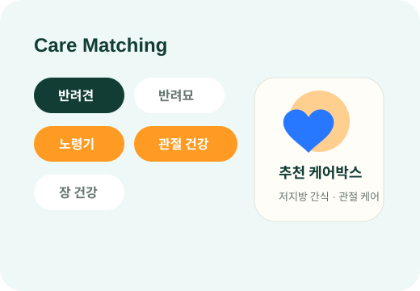
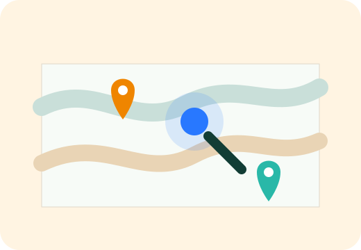
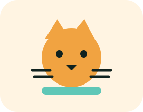
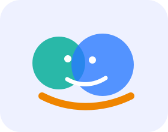

반려동물 정보 기록
건강·식사·체중·활동 등 일상의 변화를 한곳에 정리합니다.
PETIEUM · AI PET CARE BETA
반려동물의 건강·영양·생활기록을 한곳에서 관리하고, 생애주기에 맞는 관리 정보를 확인하세요. 월간 AI 리포트는 현재 서비스 구상을 보여주는 시연 예시입니다.
구글 계정 로그인으로 연결됩니다. 반려동물 정보 등록 기능은 준비 중입니다.
반려동물의 이번 달 생활 기록
HOW IT WORKS
기록을 모으고 변화의 흐름을 이해해, 다음 관리 계획으로 연결하는 과정입니다.
건강·식사·체중·활동 등 일상의 변화를 한곳에 정리합니다.
누적 기록을 요약하고 놓치기 쉬운 변화와 관리 포인트를 확인합니다.
연령과 생활패턴에 맞춰 다음 달 관리 체크리스트를 준비합니다.
※ 위 단계는 서비스 기획 흐름을 설명하며, 리포트 자동 생성과 정보 저장 등 실제 제공 범위는 베타 개발에 따라 달라질 수 있습니다.
MONTHLY REPORT PREVIEW
병원 상담 전에 지난 기록을 돌아보고 보호자가 알아야 할 정보를 한눈에 정리할 수 있도록 돕는 것이 목표입니다.
※ 의료적 진단·치료 또는 실제 이용자의 건강 결과가 아닙니다.
WHY PETIEUM
병원 방문 전 상태를 설명해야 할 때, 보호자는 생각보다 많은 정보를 놓칩니다. 펫이음은 흩어진 기록을 모아 매월 관리 루틴으로 이어줍니다.
식욕, 체중, 배변, 복약, 특이 행동이 메모·사진·기억 속에 흩어집니다.
관절, 장, 피부, 체중 등 관리 목적별로 어떤 제품이 맞는지 판단하기 어렵습니다.
갑작스러운 상황에서 병원 상담 전 정리할 내용이나 주변 서비스를 찾는 데 시간이 걸립니다.
SERVICE
일상 기록·AI 리포트에 집중하고, 상품 추천과 위치 기반 정보는 향후 확장 서비스로 검토합니다. 상세보기를 눌러 기획 예시를 확인해 보세요.
진료, 접종, 복약, 체중, 식욕, 특이사항을 월 단위로 정리해 병원 상담 전 확인하기 쉽게 제공합니다.
※ 질병 진단이 아닌 보호자 기록 정리 및 상담 준비용 리포트입니다.

생애주기와 관리 목적을 바탕으로 제품을 추천하는 제휴형 모델을 검토 중입니다. 실제 상품 판매·배송은 아직 제공되지 않습니다.
관절 부담을 고려한 저지방 간식, 체중 기록 리마인드, 활동량 변화 요약 리포트를 함께 제안합니다.

반려동물과 이별하는 순간에 필요한 업체 정보 제공을 검토 중입니다. 현재는 서비스 기획 예시입니다.
이별의 순간에는 검색과 비교를 차분히 하기 어렵습니다. 펫이음은 현재 위치 기준 가까운 등록 업체 정보를 확인할 수 있는 구조를 준비합니다.

CARE BY PET TYPE
반려견, 반려묘, 기타 반려동물은 생활환경과 관리 포인트가 다릅니다. 펫이음은 유형별로 필요한 기록과 케어를 다르게 설계합니다.
산책량, 관절, 체중, 피부·장 건강 관리가 중요합니다.

음수량, 배변, 스트레스, 헤어볼·요로 관리가 핵심입니다.

종별 사육환경, 먹이, 행동 변화 기록이 중요합니다.
MEMBERSHIP
기본 정보는 무료로 살펴보고, 프리미엄 기능은 개인화 관리에 집중하는 방향으로 검토하고 있습니다.
아래 비교는 서비스 기획안입니다. 현재 유료 결제와 정식 구독은 아직 제공되지 않습니다.
| 주요 기능 | 무료 회원 | 프리미엄 검토 중 |
|---|---|---|
| 반려동물 기본 정보 | 기초 정보 확인 | 기본 정보 기반 맞춤 관리 |
| 생애주기별 관리 정보 | 기본 가이드 | 맞춤 관리 가이드 구상 |
| AI 케어 리포트 | 데모 예시 보기 | 월간 개인화 리포트 계획 |
| 케어 제품 연계 | 서비스 소개 | 제휴 추천 계획 · 향후 확장 |
| 이용료 | 무료 | 월 9,900원 (가설 가격) |
※ 월 9,900원은 지불의사와 운영비 검증을 위한 가격 가설이며, 확정 판매가가 아닙니다. 회원별 실제 제공 기능 및 정식 출시 일정은 미정입니다.
BETA OPEN
구글 계정으로 로그인해 펫이음 베타를 확인하세요. 반려동물 정보 입력과 실제 구독 기능은 준비 중입니다.
펫이음은 반려동물의 건강 기록 정리와 케어 루틴 관리를 돕는 서비스입니다. 질병 진단, 치료, 처방 또는 복약 변경 판단은 제공하지 않으며, 이상 증상이 있는 경우 동물병원 상담을 권장합니다.
FAQ
펫이음 서비스에 대해 궁금한 점을 확인해 보세요.
펫이음은 반려동물의 건강 및 생활 기록을 기반으로 보호자가 일상적인 건강관리를 체계적으로 할 수 있도록 돕는 AI 기반 반려동물 케어 서비스입니다.
현재 베타 서비스 신청을 받고 있으며, 실제 제공 기능과 정식 서비스 일정은 준비 상황에 따라 달라질 수 있습니다.
반려동물의 건강 및 생활 기록을 분석해 보호자가 상태를 이해하고 관리할 수 있도록 돕는 서비스 기획 기능입니다. 실제 제공 범위는 서비스 출시 과정에서 확정됩니다.
아닙니다. 펫이음에서 제공하는 정보는 일상적인 건강관리를 돕기 위한 참고 자료이며, 수의사의 진단이나 처방 또는 치료를 대신하지 않습니다.